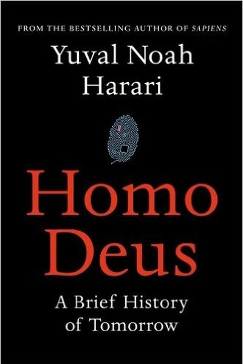

Library › Self-Improvement
Homo Deus — Summary & Key Lessons

A brief history of tomorrow — from the Sapiens author: the thrilling and terrifying future of humanity in the age of data and AI.
📖 OPEN THE FULL INTERACTIVE BREAKDOWN →🌐 Read it in Hindi, Hinglish, Gujarati, Tamil & 22 more languages — free, with audio.
💡 The Big Idea
Harari continues Sapiens: humanity has nearly conquered the old killers (famine, plague, war). The new agenda: immortality, happiness and godlike power. As algorithms learn us better than we know ourselves, the biggest questions become: what happens to human meaning when machines know us better than we do — and who owns the data?
🧠 The 5 Key Lessons
Lesson 1: The Old Agenda Is Done — Here Comes the New One
The New Human Agenda
For millennia, humanity's agenda was famine, plague and war. In the 21st century these are largely beaten — deaths from starvation and war are at historic lows. The new agenda: conquering death (immortality), finding bliss (happiness) and upgrading humans into gods (augmentation).
📖 Example: Harari's data: more people now die from obesity than starvation, and from suicide than war. The old demons are fading — the new questions are about enhancement, not survival. Read the full example →
⚡ Do this: Notice the shift in your own life: your real problems are probably not survival — they're meaning, health-span and focus. Upgrade your goals accordingly.
Lesson 2: The Algorithm Knows You Better Than You Do
The Great Decoupling
As we hand our data to algorithms — searches, swipes, heartbeats — they begin predicting our desires, moods and choices better than we can. The terrifying endgame: authority shifts from human experience to external data processing. Who are 'you' when an algorithm knows your next mood before you do?
📖 Example: Harari points to dating apps, health trackers and recommendation engines: every choice feeds the model. The 'free market of ideas' quietly becomes an 'optimization for engagement' — shaping what we think, buy and vote. Read the full example →
⚡ Do this: Audit one algorithm in your life: what does your feed optimize for — your growth or your attention? Choose your inputs accordingly.
Lesson 3: Dataism: The New Religion
The Data Religion
Harari forecasts the rise of Dataism: the belief that information flow is the supreme value, and organisms are just biochemical algorithms. In the dataist worldview, human experiences are data-processing events, and the ultimate authority is the network.
📖 Example: We already outsource memory to Google, direction to GPS, taste to recommendations. Dataism is this trend becoming a philosophy — the flow of information treated as sacred. Read the full example →
⚡ Do this: Hold the line on one area: keep one skill, one memory, one decision completely human — no app involved. That's your sovereignty.
Lesson 4: Meaning Is a Story — So Choose It Wisely
The Human Gap
Humans run on stories: religions, nations, money, companies — all shared fictions that coordinate millions. Meaning doesn't come from 'objective reality'; it comes from the stories we believe and enact. The good news: since meaning is a story, YOU can edit yours.
📖 Example: Money is a story (a note has no value except shared belief); nations are stories; careers are stories. Realizing this doesn't make meaning fake — it makes it chosen. Read the full example →
⚡ Do this: Write your current life-story in 3 sentences. Then rewrite one sentence deliberately — you are the author, not the reader.
Lesson 5: The Knowledge Paradox: Know Thyself Is Getting Harder
The Great Unknown
Historically, knowing yourself gave you power. But when algorithms can know you better, self-knowledge may lose its value — unless you keep your data and attention sovereign. The future rewards people who understand HOW their mind works more than those who just accumulate facts.
📖 Example: Harari's warning: 'In the 21st century, knowing yourself may be more important than ever — precisely because the algorithms are trying to know you.' Read the full example →
⚡ Do this: Learn one thing about your own cognitive machinery this week — a bias, a habit loop, an emotional trigger. That's 21st-century self-knowledge.
✅ 5-Step Action Plan
- Upgrade your agenda: focus on meaning, health-span, focus.
- Audit what one algorithm is optimizing in your life.
- Keep one fully human skill/memory/decision — no app.
- Rewrite one sentence of your life-story deliberately.
- Learn one bias about your own mind this week.
💬 Best Quotes from Homo Deus
- “In the twenty-first century, the second great revolution will be the rise of the dataist worldview.”
- “The real question is not whether AI is conscious, but whether it matters to us.”
- “Homo sapiens conquered the world because it can cooperate flexibly in large numbers.”
Interactive version: mark lessons as read, listen in your language, share quote cards.